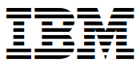

Marcell Ramos de Souza
Telefones:
 (92) 99135-7070
/ (19) 3238-6869
(92) 99135-7070
/ (19) 3238-6869
Jardim Nova Europa, Campinas / SP / CEP: 13040-117
Objetivo Profissional:Gerente de Tecnologia da Informação.
Resumo das qualificações:
Líder em Tecnologia da Informação com mais de 20 anos de experiência em segurança da informação,
infraestrutura
e gestão de projetos. Especialista em planejar, implementar e gerenciar ambientes complexos de TI, garantindo
excelência operacional e conformidade com as melhores práticas de mercado.
Possuo MBA em Cybersecurity e Governança, com sólida formação em Engenharia da Computação e especialização em
Software Livre. Minhas certificações Microsoft e ITIL, combinadas com habilidades em Python, Docker
e administração de redes, me permitem resolver desafios críticos e liderar projetos estratégicos com impacto
mensurável.
Apaixonado por inovação, sou reconhecido por liderar equipes de alta performance e implementar soluções
robustas que fortalecem a segurança cibernética e a eficiência organizacional.
Histórico profissional:
 Procoating Indústria de Laminado da Amazônia LTDA - Grupo Prolam, Manaus/AM.
Procoating Indústria de Laminado da Amazônia LTDA - Grupo Prolam, Manaus/AM.
Supervisor de Tecnologia da informação.
Setembro/2010 – Presente (14 anos e 5 meses).
• Lidero a entrega de serviços de Tecnologia da Informação na planta de Manaus, com foco na excelência
operacional e na segurança cibernética. Minhas responsabilidades abrangem desde negociações estratégicas com
fornecedores até a administração completa da infraestrutura de TI.
• Sou responsável pela administração de servidores e desktops, desenvolvimento e implementação de projetos
de TI, além de garantir a segurança da rede por meio do gerenciamento de firewalls Sophos/SonicWall TZ 215.
Também cuido da configuração de serviços essenciais como DHCP e DNS, implementação e gestão de VPNs, e
administração do Active Directory (AD) e suas políticas de grupo (GPO).
• Minha atuação inclui a gestão de bancos de dados SQL, virtualização com VMWare, e o desenvolvimento de
estratégias robustas de backup e soluções antivírus. Além disso, ofereço suporte aos sistemas ERP
Logix/Protheus, desenvolvo scripts para automatização de tarefas em ambientes Windows, e resolvo problemas
críticos em servidores.
Competências:
Segurança de Rede | Políticas de Grupo (GPO) | Active Directory | ERP
(Logix/Protheus) |
Administração de Servidores | DNS | Administração de Redes | Infraestrutura de TI | Virtualização (VMWare) |
Gestão de Backup | Soluções Antivírus.
 FPF Tech - Fundação Paulo Feitoza, Manaus/AM.
FPF Tech - Fundação Paulo Feitoza, Manaus/AM.
Administrador de Rede Sênior.
Novembro/2003 - Agosto/2010 (6 anos e 11 meses).
• Gestão de Infraestrutura de TI: Como Líder de Equipe, gerenciei uma infraestrutura robusta composta por
quatro servidores físicos e virtuais, garantindo o funcionamento contínuo e seguro do ambiente de TI.
Trabalhei com tecnologias avançadas, incluindo Hyper-V, Vmware, Nod32 Business, MYSQL, SQL Server, Project
Server, Exchange e ERP Microsiga Protheus, essenciais para as operações diárias.
• Administração de Estações de Trabalho: Supervisionei e aperfeiçoei 140 desktops com sistemas
operacionais Windows 7 e XP, assegurando máxima eficiência e produtividade para a equipe e a organização.
• Gestão de Conectividade e Inventário: Gerenciei dois links dedicados para garantir conectividade
estável e alta desempenho, além de programar um controle rigoroso de inventário de hardware e software,
prevenindo riscos de compliance e otimizando recursos.
• Foco em Excelência Operacional e Inovação: Comprometido com a excelência, busquei continuamente
soluções tecnológicas inovadoras para atender às necessidades imediatas e antecipar desafios futuros. Minha
abordagem estratégica priorizou a qualidade das soluções de TI alinhada às melhores práticas do mercado.
• Meu compromisso sempre foi com a excelência operacional, buscando
incessantemente soluções tecnológicas inovadoras que pudessem não
apenas atender às necessidades imediatas, mas também antecipar e mitigar
possíveis desafios futuros. Acredito firmemente que o sucesso da equipe
e da organização está diretamente ligado à qualidade das soluções de TI
oferecidas, e me dediquei a garantir que essas soluções fossem de alto nível,
alinhadas com as melhores práticas do mercado.
 Print Laser Service LTDA - Grupo PrintLaser, Alpha Ville Barueri/SP.
Print Laser Service LTDA - Grupo PrintLaser, Alpha Ville Barueri/SP.
Administrador de Rede Pleno II.
Novembro/2001 - Abril/2003 (1 ano e 7 meses).
• Gerenciei uma equipe com dois colaboradores e supervisei uma
infraestrutura de TI complexa, composta por seis servidores com Windows
2000 Server. Minhas responsabilidades incluíam a administração de um
firewall ISA para garantir a segurança da rede, além de configurar e manter
serviços essenciais como DHCP, DNS, RIS, Active Directory, e Políticas de
Grupo (GPO).
• Além disso, realizei o controle rigoroso do inventário de hardware e software,
assegurando uma gestão eficaz dos recursos tecnológicos da organização.
Print Laser Service LTDA
Engenheiro de Rede Pleno II.
October 2001 - April 2003 (1 year 7 months)
Gerenciei uma equipe com dois colaboradores e supervisei uma
infraestrutura de TI complexa, composta por seis servidores com Windows
2000 Server. Minhas responsabilidades incluíam a administração de um
firewall ISA para garantir a segurança da rede, além de configurar e manter
serviços essenciais como DHCP, DNS, RIS, Active Directory, e Políticas de
Grupo (GPO).
Fui responsável pela gestão de Unidades Organizacionais (OU) e pela
configuração de VPNs para assegurar conectividade segura. Além disso,
gerenciei links dedicados e o sistema de envio de e-mails, garantindo a
comunicação eficiente dentro da organização.
• A infraestrutura de trabalho incluía 120 estações com Windows 2000
Professional, para as quais mantive o cabeamento estruturado e a
configuração de switches. Realizei o controle rigoroso do inventário
de hardware e software, assegurando uma gestão eficaz dos recursos
tecnológicos.
• Além das tarefas operacionais, desempenhei um papel estratégico no
planejamento e na padronização de novas tecnologias, desenvolvendo
e implementando soluções completas que atendiam às necessidades da
organização e promoviam a inovação tecnológica.
Sonda Procwork - Serviços e Soluções TI para Empresas, São Paulo/SP.
Administrador de Rede Pleno II.
Novembro/2001 - Abril/2003 (1 ano e 7 meses).
• Coordenei a equipe no projeto de implementação de ADSL, gerenciando
diversos aspectos técnicos e operacionais. Fui responsável pela
administração do Active Directory e da rede baseada em Windows 2000
Server, garantindo a integração e a segurança dos sistemas.
• Trabalhei com tecnologias como Frame Relay, Windows Script Host, Proxy, e
ferramentas de acesso remoto como pcAnywhere e VNC.
• Minhas responsabilidades incluíam a configuração e manutenção de serviços
críticos, incluindo DNS, WIS e RAS, além da gestão de bancos de dados SQL.
Realizei o monitoramento contínuo da rede, assegurando seu desempenho e
integridade.
• Também fui encarregado da documentação detalhada das operações, do
controle de inventário de hardware e software, e da administração do servidor
Sendmail e dos links dedicados para garantir uma conectividade confiável e
eficiente.

IBM Brasil – ADECCO e Companhia Mauá, Hortolândia/SP.
Analista de Sistema.
Outubro/1999 - Outubro/2000 (1 ano e 2 meses).
• Na IBM, adquiri experiência significativa em redes baseadas em Windows
NT 4.0, onde fui responsável pela administração de bancos de dados e pelo
gerenciamento de Lotus Notes. Minhas funções incluíam o monitoramento
contínuo da rede para garantir sua estabilidade e eficiência, além da
documentação detalhada das operações realizadas.
• Também desempenhei um papel crucial no controle do inventário de hardware
e software, assegurando uma gestão precisa dos recursos tecnológicos. Fui
responsável pela administração do servidor Sendmail e pela gestão de links
dedicados, o que garantiu uma conectividade confiável e a comunicação
eficiente dentro da organização. Meu trabalho na IBM envolveu a aplicação de
melhores práticas em tecnologia para suportar e otimizar a infraestrutura de TI
da empresa.
Receita Federal DRF, Campinas/SP.
Estagiário de informática.
Março/1998 - Agosto/1998 (6 meses).
• Atuei no suporte e administração de uma rede baseada em Windows Server
4.0 NT, proporcionando suporte técnico para usuários e gerenciando a
intranet da organização.
• Minhas responsabilidades incluíam a resolução de problemas técnicos, a
configuração e manutenção de sistemas, e a garantia de um ambiente de
trabalho eficiente por meio do suporte contínuo aos usuários e da gestão
eficaz da infraestrutura de rede interna.
Formação acadêmica:
• MBA em Segurança Cibernética, Defesa Cibernético.
• Instituto de Gestão e Tecnologia da Informação (IGTI/XPe)
• Ataque Cibernético 2022 - 148h
• MBA em Segurança Cibernética, Defesa Cibernético.
• Instituto de Gestão e Tecnologia da Informação (IGTI/XPe)
• Defesa Cibernético 2021 - 148h
 • Pós-Graduação Lato Sensu em Software Livre.
• Pós-Graduação Lato Sensu em Software Livre.
• Universidade Federal do Amazonas (UFAM/AM)
• Software Livre - Linux - 2004/2005.
• Graduação em Engenharia de Computação.
• Universidade São Francisco (USF/SP)
• Engenharia de Computação - 1995/2000.
• Técnico em Processamento de Dados.
• Instituto de Gestão e Tecnologia da Informação (IGTI/XPe)
• Colégio São Luís (PUCC/SP) 1988/1991.
Certificações:
• MCITP – Microsoft Certified IT Professional Server® Administrator on Windows
Server 2008.
• MCTS – Windows Server® 2008 Applications Infrastructure Configuration.
• MCTS – Microsoft Certified Technology Specialist.
Certificações adicionais Transcript ID: 977267 - acesso visitante: marcells.
• ISO 17799 – Academia Latino Americana de Segurança da Informação.
Especializações:
• AWS Cloud Practitioner Essential Day (KA Solution, 8h, 06/2022).
• Fundamentos em Cibersegurança (IBSEC, 8h, 06/2022).
• Boas Práticas de Cibersegurança (IBSEC, 8h, 05/2022).
• Microsoft Azure Fundamentals AZ-900 (KA Solution, 8h, 02/2022).
• Inteligência Artificial (FPF Tech, 60h, 10/2021).
• Microsoft Azure Data Fundamentals DP-900 (KA Solution, 8h, 02/2021).
• DELL SonicWALL - Network Security Basic Administration NS-102SG-A (Alert Security, 24h,
02/2014).
• ITIL V3 Foundation (Centro de Treinamento FABRIQ, 24h, 10/2012).
• Microsoft Server 2008 IT PRO Enterprise Administrator (APB Informática LTDA, 168h, 08/2011).
Idioma:
• English - School Wizard: W2 até o W12 (2014 / 2019).
.
.
São Paulo, 21 de Janeiro de 2025.
 marcell.ramos@gmail.com
marcell.ramos@gmail.com
 https://instagram.com/marcellsouza
https://instagram.com/marcellsouza
 https://learn.microsoft.com/en-us/users/marcellsouza
https://learn.microsoft.com/en-us/users/marcellsouza
 https://br.linkedin.com/in/marcellsouza
https://br.linkedin.com/in/marcellsouza